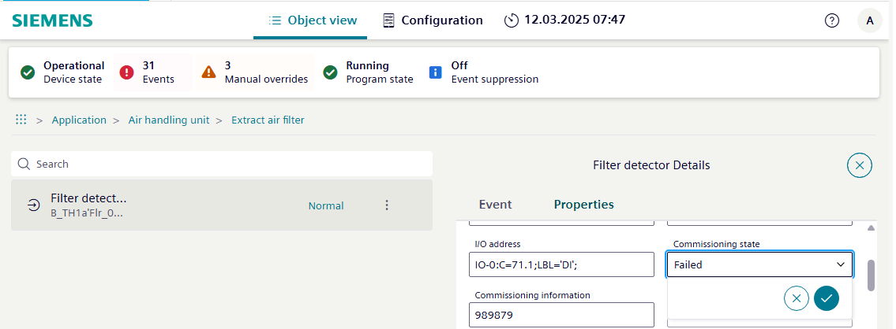

Checking the commissioning state of a data point
- Go to the Object view tab.
- Select Application.
- Select [Plant name] > [Object name].
Note: The data points can be located on different hierarchy levels. - Select .
- The Object properties dialog area opens.
- Select the Properties tab.
- In the Commissioning state drop-down list, select the option:
- Not checked
- Failed
- Passed
- Select to send the command.
- Select the next data point.


A detailed commissioning report can be created and printed out in reports.
Data point test report